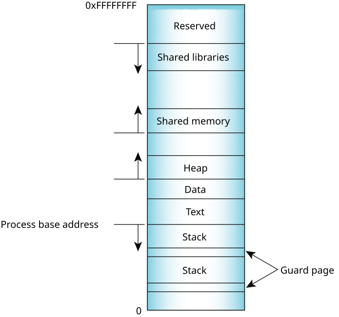

The diagram below shows the memory layout of a typical process. The process load segments (corresponding to text and data in the diagram) are loaded at the process's base address. The main stack is located just below and grows downwards. Any additional threads that are created will have their own stacks, located below the main stack. Each of the stacks is separated by a guard page to detect stack overflows. The heap is located above the process load segments and grows upwards.

In the middle of the process's address space, a large region is reserved for shared objects. Shared libraries are located at the top of the address space and grow downwards.
When a new process is created, the process manager first maps the two segments from the executable into memory. It then decodes the program's ELF header. If the program header indicates that the executable was linked against a shared library, the process manager will extract the name of the dynamic interpreter from the program header. The dynamic interpreter points to a shared library that contains the runtime linker code. The process manager will load this shared library in memory and will then pass control to the runtime linker code in this library.